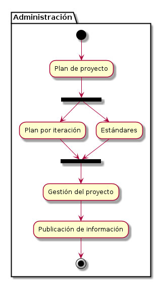

Metodología de Desarrollo de Software Libre (MDSL) Versión 2.0
Conceptualización
Plantillas
- Análisis del Dominio -- Enumeración e identificación de los procesos vinculados a la aplicación
- Propuesta de Desarrollo -- Propuesta de desarrollo de producto de software.
Flujograma
En este proceso se recopila y analiza información concerniente a los procesos que se requieren automatizar en una aplicación de software, con el objetivo de comprender el dominio de la aplicación a desarrollar, así como los problemas o necesidades de los usuarios en relación a dichos procesos, todo ello con la finalidad de plantear una propuesta de desarrollo de software acorde a las necesidades de los usuarios.
